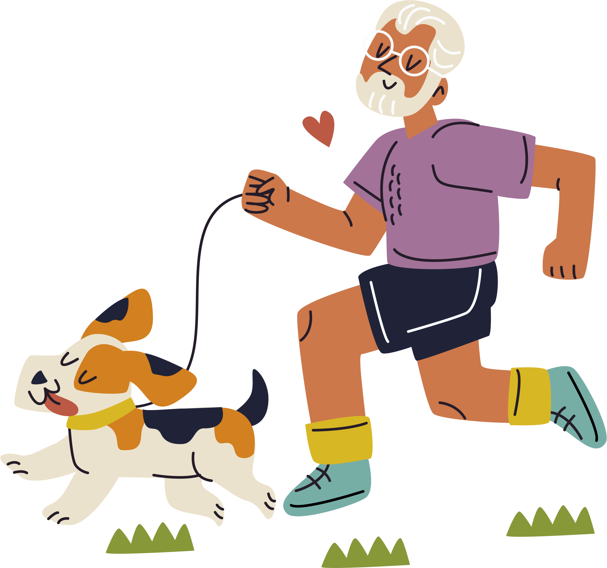

SOBRE NOSOTROS
PREVET es una obra social de excelencia para mascotas exclusiva de veterinaria panda con atención médica de primer nivel las 24hs. Cuenta con coberturas en todos los servicios según el plan que el tutor elija. Nuestros planes están orientados a mejorar la calidad de vida de la mascota ejerciendo la medicina preventiva y, a su vez, ayudando al tutor a que sus gastos se reduzcan al mínimo posible. También tenemos coberturas frente a todo tipo de imprevistos como cirugías, internaciones y hasta especialistas veterinarios.
